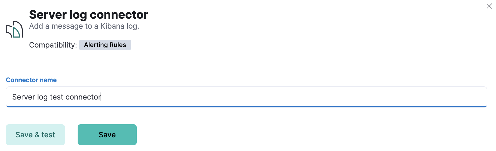
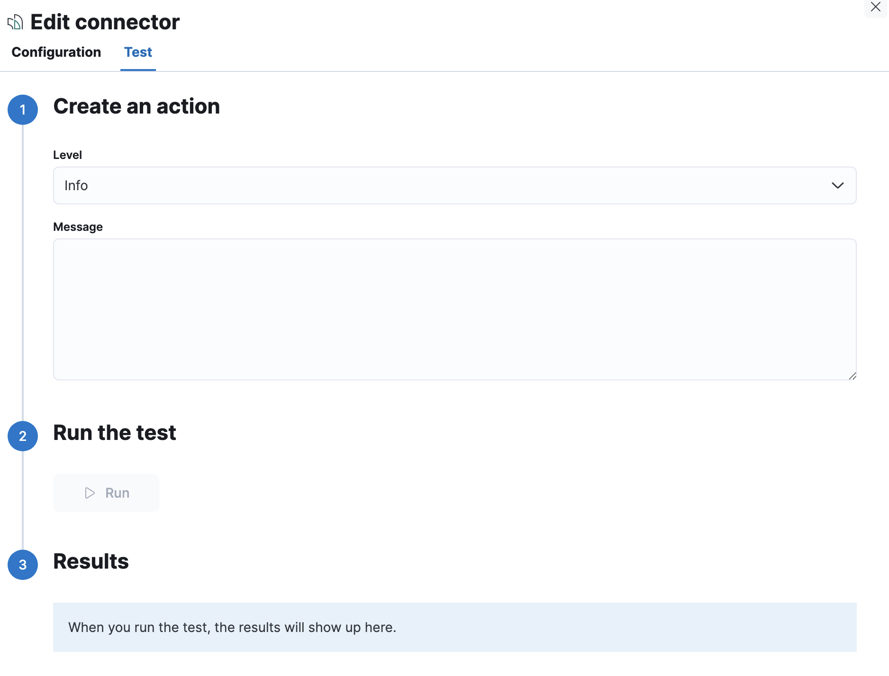

Server log connector and action
editA server log connector writes an entry to the Kibana server log.
Create connectors in Kibana
editYou can create connectors in Stack Management > Connectors or as needed when you’re creating a rule. For example:

Connector configuration
editServer log connectors do not have any configuration properties other than a name.
Test connectors
editYou can test connectors as you’re creating or editing the connector in Kibana. For example:

Server log connector actions contain a message and a log level, which defaults to info. Valid log level values are trace, debug, info, warn, error,
and fatal.